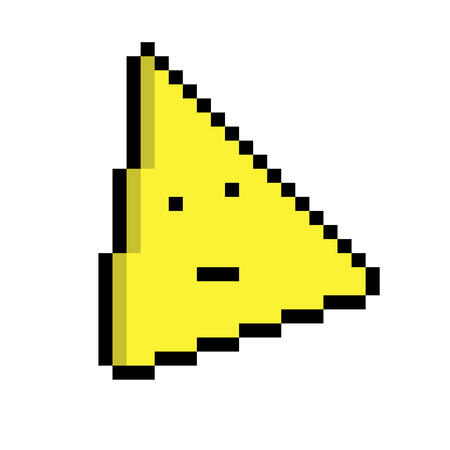
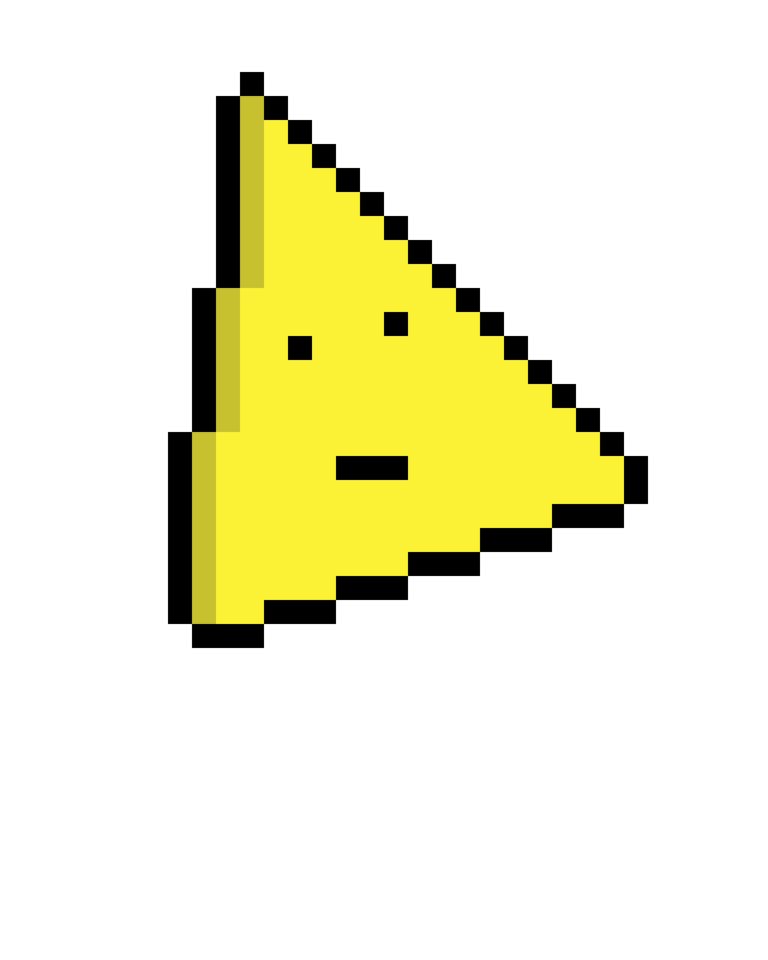

Looking Up I See Only A Ceiling


Italian game designer creating psychological, emotionally impactful experiences.
Hello! I am Andrea, aka silver978, an italian indie game designer and developer passionate to psychological horrors, but also energetic and stylish videogames: my main focus is on providing fun and emotional impactful experiences to the players. I started developing games since 2015, when I mainly produced experimental ones. I began publishing commercial indie games on 2023, by releasing on Steam a short psychological adventure about a stressed girl trying to manage her study life: «Looking Up I See Only A Ceiling.